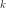
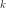

OrthogonalDirection¶
- class OrthogonalDirection(*args)¶
Sampling following the orthogonal direction strategy.
- Available constructor:
OrthogonalDirection()
OrthogonalDirection(dimension, k)
- Parameters
- dimensioninteger
The dimension of the standard space. By default, but automatically updated by the calling class.
- kint
The number of elements in the linear combinations. By default,
 but automatically updated by the calling class.
but automatically updated by the calling class.
See also
Notes
This strategy is parameterized by , where
 is
the dimension of the input random vector
is
the dimension of the input random vector  . We generate one
direct orthonormalized basis uniformly distributed in
the set of direct orthonormal bases. We consider all the normalized linear
combinations of  vectors chosen within the vectors of the basis, where
the coefficients of the linear combinations are in . This
generates new vectors . We sample according
to all the directions defined by the vectors .
. We generate one
direct orthonormalized basis uniformly distributed in
the set of direct orthonormal bases. We consider all the normalized linear
combinations of  vectors chosen within the vectors of the basis, where
the coefficients of the linear combinations are in . This
generates new vectors . We sample according
to all the directions defined by the vectors .If
, we consider all the axes of the standard space.Methods
generate()Generate the sample.
Accessor to the object's name.
Accessor to the dimension.
getId()Accessor to the object's id.
getName()Accessor to the object's name.
Accessor to the object's shadowed id.
Accessor to a realization according to the uniform distribution.
Accessor to the object's visibility state.
hasName()Test if the object is named.
Test if the object has a distinguishable name.
setDimension(dimension)Accessor to the dimension.
setName(name)Accessor to the object's name.
setShadowedId(id)Accessor to the object's shadowed id.
setVisibility(visible)Accessor to the object's visibility state.
getUniformOrientationRealization
- __init__(*args)¶
- generate()¶
Generate the sample.
- Returns
- sample
Sample The sample generated according to the orthogonal direction strategy.
- sample
- getClassName()¶
Accessor to the object’s name.
- Returns
- class_namestr
The object class name (object.__class__.__name__).
- getDimension()¶
Accessor to the dimension.
- Returns
- dimensionint
Dimension of the standard space.
- getId()¶
Accessor to the object’s id.
- Returns
- idint
Internal unique identifier.
- getName()¶
Accessor to the object’s name.
- Returns
- namestr
The name of the object.
- getShadowedId()¶
Accessor to the object’s shadowed id.
- Returns
- idint
Internal unique identifier.
- getUniformUnitVectorRealization(*args)¶
Accessor to a realization according to the uniform distribution.
- Parameters
- dimensionint
The dimension of the sphere unity (which is the dimension of the standard space).
- Returns
- sample
Point The realization of a vector on the sphere unity, according to the uniform distribution.
- sample
- getVisibility()¶
Accessor to the object’s visibility state.
- Returns
- visiblebool
Visibility flag.
- hasName()¶
Test if the object is named.
- Returns
- hasNamebool
True if the name is not empty.
- hasVisibleName()¶
Test if the object has a distinguishable name.
- Returns
- hasVisibleNamebool
True if the name is not empty and not the default one.
- setDimension(dimension)¶
Accessor to the dimension.
- Parameters
- dimensionint
Dimension of the standard space.
- setName(name)¶
Accessor to the object’s name.
- Parameters
- namestr
The name of the object.
- setShadowedId(id)¶
Accessor to the object’s shadowed id.
- Parameters
- idint
Internal unique identifier.
- setVisibility(visible)¶
Accessor to the object’s visibility state.
- Parameters
- visiblebool
Visibility flag.